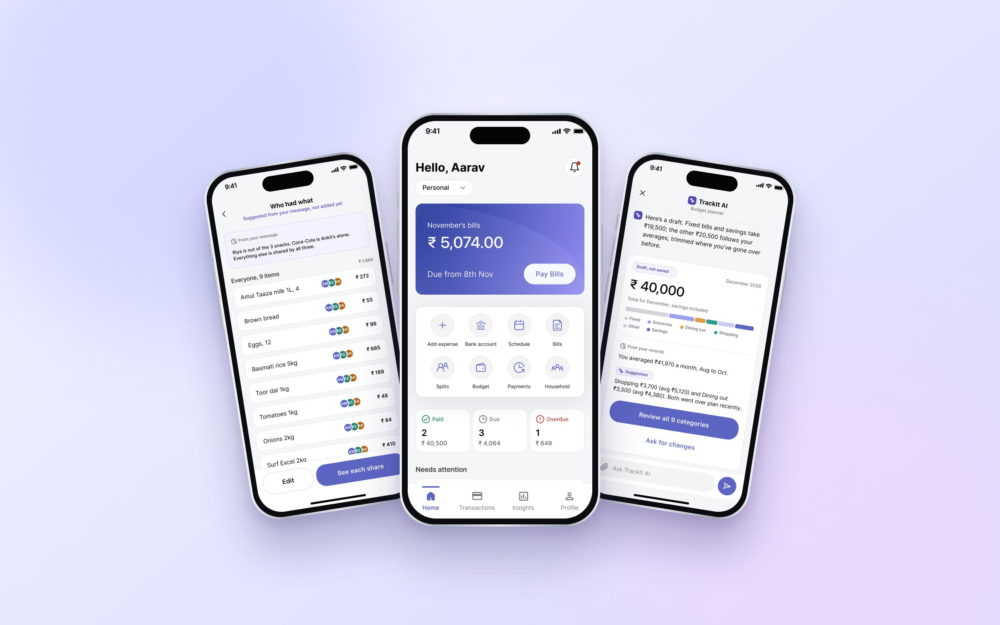
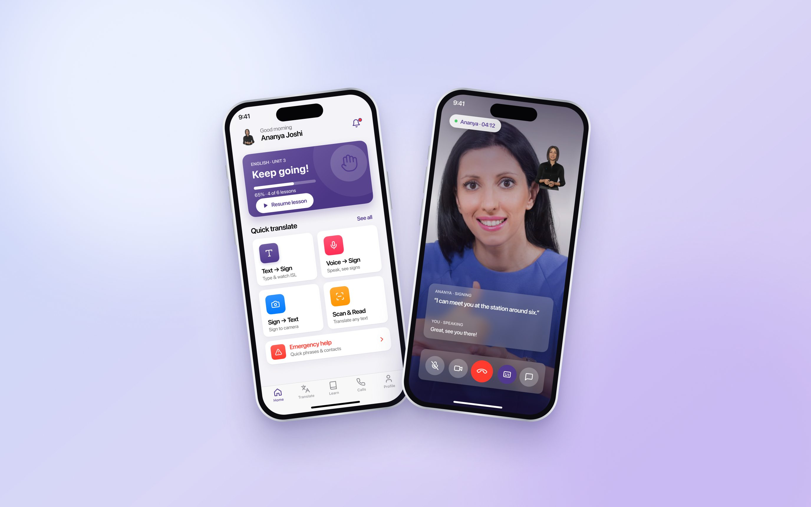

Work
Five case studies: two AI products, a household money app, an accessibility app and a research toolkit.

AI Trade Dashboard
Meridian Desk, a shared board for AI trade ideas
From the overnight suggestion to a signed-off trade. Each idea moves across one board, with the case, the tests and the sign-off opening beside it.
View case study →
Ally
An AI copilot for a home bakery
Ally answers routine WhatsApp questions from verified data and stops at anything that would commit Lakshmi to a price, a date or an order.
View case study →
SIAMA
Making craft education more contextual and connected
A planning toolkit for craft trainers. I turned an existing prototype into a saved, guided workspace with a dashboard and export.
View case study →
TrackIt
One place for the whole household’s money
Began as a group course project. I carried it on as a personal project and added new flows: an AI assistant, shared splits and budgets.
View case study →
Signease
Bridging communication through Indian Sign Language
An accessibility-focused ecosystem designed to bring Deaf and hearing people closer through Indian Sign Language.
View case study →